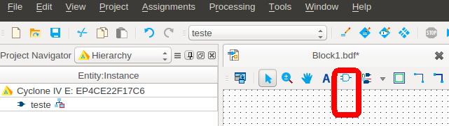
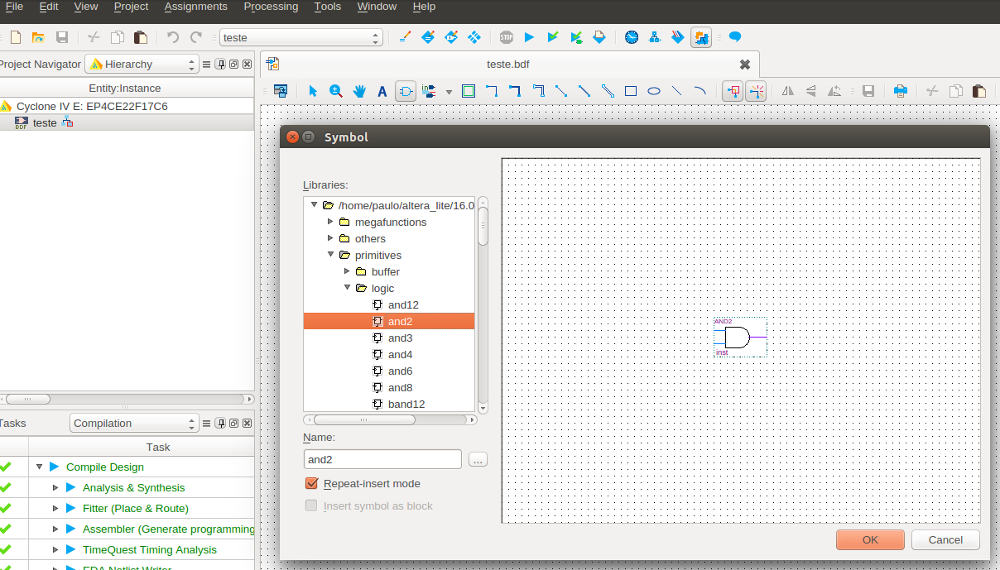
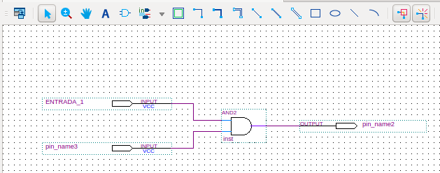

Ir para o fim do documento.
Criar o diagrama lógico do circuito:
- Menu File:
- New:
- Block Diagram/Schematic File.
- Na tela de edição que foi aberta:
- Use o simbolo da porta AND para abrir a biblioteca.

- No navegador da biblioteca:

Editar as entradas e saídas do circuito:
- Na tela de edição:
- Use o simbolo “In”:
- Selecione como entrada:
- Insira os pinos de entrada;
- Selecione como saída:
- Insira os pinos de saída.
- Modifique os nomes dos sinais de entrada e de saída:
- Com duplo clique nos nomes atuais:
- Mude para Entrada_1;
- Mude para Entrada_2;
- Mude para Saida;

Não esqueça de salvar o seu projeto.
Referências:
Página com links de referências sobre VHDL, Quartus, etc ...
Ir para o início do documento.